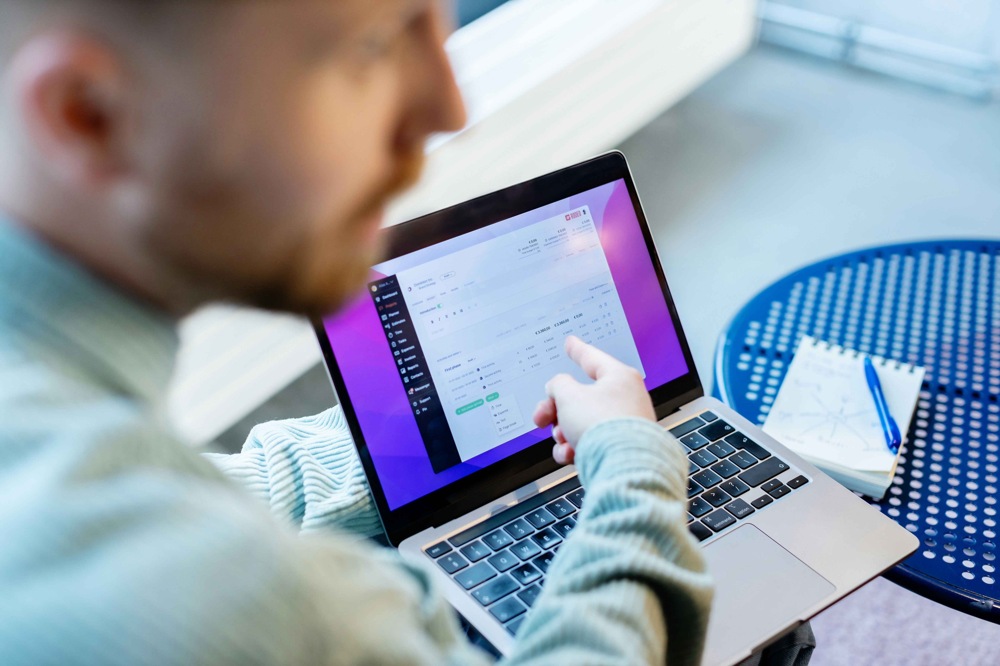

Discord Page Clone
Página inicial antiga do Discord, com foco em responsividade, proposto no curso de Desenvolvimento Front End na plataforma da DIO (Santander Open Academy).
- Versão PC e Mobile (media queries)


Sim, eles existem! Sou estudante de Engenharia de Software e trago comigo quase uma década de experiência no desenvolvimento de produtos e projetos técnicos herdados da indústria.
Hoje, meu foco é aplicar essa sólida base em resolução de problemas e design na criação de interfaces web com HTML, CSS, JavaScript.
Busco ativamente uma oportunidade de estágio em Front End/Web Development para aprender, contribuir e dar meus primeiros passos na minha carreira em tecnologia.



Desenvolvimento faz parte da minha jornada desde que comecei a trabalhar como desenhista 2D com AutoCAD. Eu apenas reproduzia e fazia simulações para as equipes de vendas e desenvolvimento, porém era impossível não pensar nas coisas que poderiam ser feitas de maneira mais eficazes e/ou que trouxessem maior satisfação ao cliente. Foi por este motivo que me tornei um projetista.
Como projetista, consegui trazer grandes mudanças para os processos e mediante a uma maior proximidade com os vendedores e clientes, desenvolvi não apenas produtos, mas também, grandes soluções para a empresa, que foram desde sistemas originais personalizados de controle de qualidade até novas técnicas para orçamento que aceleraram em até 500% o retorno aos clientes, sem perda alguma em precisão.

Depois de um bom tempo atuando na área dentro de fábricas, me esbarrei diversas vezes nas limitações e resistência à busca de inovações dentro setores que atuei, o que me fez virar os olhos ao setor que mais inova e se desafia na história recente. Tecnologia.
O desenvolvimento Front End para mim é uma oportunidade de buscar desafios maiores, fazendo parte de soluções que movem o mundo e tanto impactam nossas vidas todos os dias.
 HTML5, CSS3, JavaScript
HTML5, CSS3, JavaScript
 Responsividade e Acessibilidade
Responsividade e Acessibilidade
 Consumo de API e SEO
Consumo de API e SEO
 Python e Flask
Python e Flask
 SQL
SQL
 Algoritmos e Estrutura de Dados
Algoritmos e Estrutura de Dados
 Git e Github
Git e Github
 Metodologia Ágil e Kanban
Metodologia Ágil e Kanban
 Trello/Jira
Trello/Jira
 Linha de Comando e Administração de Sistemas
Linha de Comando e Administração de Sistemas
 Português Brasileiro - Nativo
Português Brasileiro - Nativo
 Inglês Americano - Avançado
Inglês Americano - Avançado
 Alemão - Básico
Alemão - Básico
Página inicial antiga do Discord, com foco em responsividade, proposto no curso de Desenvolvimento Front End na plataforma da DIO (Santander Open Academy).
Reprodução da página inicial do Youtube com objetivo de treinar flexbox e demais propriedades de posicionamento no curso de Desenvolvimento Front End na plataforma da DIO (Santander Open Academy). O layout foi feito apenas para PC, em breve com uma segunda versão adicionando responsividade e media query para mobile.


 linkedin.com/in/maxadobr
github.com/maxadobr
instagram.com/maxadobr
linkedin.com/in/maxadobr
github.com/maxadobr
instagram.com/maxadobr